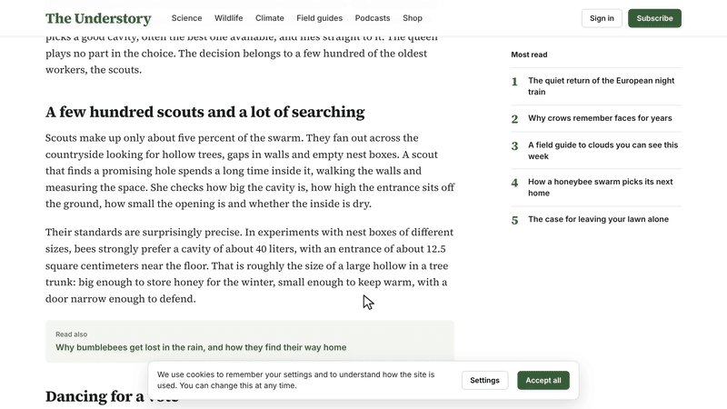

distill
TL;DR any website. Nothing leaves your browser.
Click it on any article and watch the page boil down. Menus and ads evaporate, the sentences that matter light up, and a card hands you the main idea, the key points, the numbers and the keywords.
Keep it: drag distill to your bookmarks bar, or On a phone, for a phone. and save it as a bookmark.

What you get
Every summary starts with the main idea, the one sentence that best captures the page. DISTILL looks for it near the headline and in the opening paragraphs, where writers usually put it, and checks that it connects to the rest of the text.
Below it come up to five key points. They are chosen to cover different sections instead of repeating one paragraph, and they keep the order of the original. Click a point and the page scrolls to it. The sentence is already marked in yellow, so you can read the paragraph around it.
The figures pull out the numbers that carry the story, such as percentages, prices, distances and durations, each with the phrase it belongs to. Keywords show what the page is about. Click one and every mention lights up in the text, and each further click takes you to the next one.
The meter at the top compares how long the page takes to read with how long the summary takes. Reading speed depends on the language, so the meter uses the averages from a study of reading speed in 17 languages, 228 words a minute for English. Copy puts the whole summary on your clipboard with a link back to the page.
Chrome's built-in AI
On a computer where Chrome can run its on-device model, DISTILL also offers a summary written in the model's own words. Chrome 138 and later can summarize English, Spanish, Japanese, German and French text, and the model runs on your machine, so the page still goes nowhere.
The first run downloads the model. Chrome needs about 22 GB of free disk space for it and either a graphics card with more than 4 GB of memory or 16 GB of RAM, and DISTILL starts the download only when you press the button. Phones, other browsers and pages in other languages get the offline summary, which works with any language.
When a page is in a different language from your browser, the card shows a Translate button that uses Chrome's on-device translator, so you get the gist of an article in a language you don't read without pasting it anywhere.
How it works
DISTILL is a single script of about 58 KB with no dependencies. It reads a page the way a careful reader skims it. First it finds the main text by weighing every block: long paragraphs count in favor of their container, while links, menus, share buttons and comment threads count against it. The container with the best balance becomes the article.
Then it splits the article into sentences with the browser's own Intl.Segmenter, which knows the rules of each language, and ranks them with TextRank, an idea borrowed from early web search: a sentence matters when it shares words with many other important sentences. The ranking also rewards sentences that echo the headline or open a paragraph, and the final picks are spread across the article so that the points don't repeat each other.
The page itself is never rewritten. Highlights use the CSS Custom Highlight API, which paints over ranges of text without touching the DOM, so React, Vue and other frameworks keep working underneath. Faded elements get temporary inline styles that are put back exactly when you press Esc, down to the original style attribute. The whole engine fits inside the bookmark, so it also runs on sites with a strict Content Security Policy.
Privacy
There are no servers, accounts, analytics or cookies. DISTILL reads the page in your tab, draws the card in the same tab and forgets everything when you close it. Chrome's AI and translator run on your device too. This site loads no third-party scripts or fonts either.